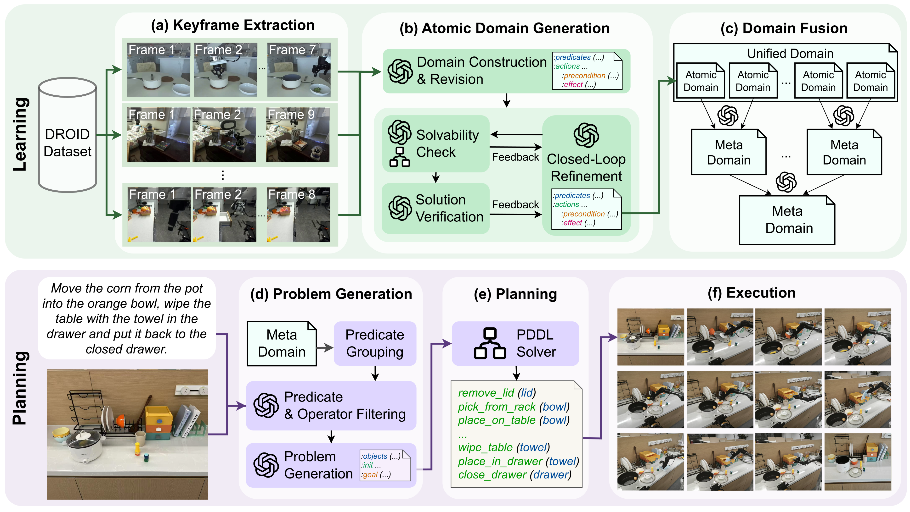

Visualization of our pre-trained unified domain, with 3,137 operator nodes (green) and
2,875 predicate nodes (purple).
Abstract
Robotic task planning in real-world environments requires reasoning over implicit constraints from language and vision.
While LLMs and VLMs offer strong priors, they struggle with long-horizon structure and symbolic grounding.
Existing methods that combine LLMs with symbolic planning often rely on handcrafted or narrow domains, limiting generalization.
We propose UniDomain, a framework that pre-trains a PDDL domain from robot manipulation demonstrations and applies it for online robotic task planning.
It extracts single domains from 12,393 manipulation videos to form an all-domain set with 3137 operators, 2875 predicates, and 16,481 causal edges.
Given a target class of tasks, it retrieves relevant atomics from the all-domain set and systematically fuses them into high-quality meta-domain to support compositional generalization in planning.
Experiments on diverse real-world tasks show that UniDomain solves complex, unseen tasks in a zero-shot manner, achieving up to 58% higher task success and 160% improvement in plan optimality over state-of-the-art LLM and LLM-PDDL baselines.

Overview of UniDomain. In the first phase, Domain Pretraining, atomic PDDL domains are extracted
from visual-language robot demonstrations using keyframe extraction (a), VLM-based
domain construction, and LLM-based closed-loop refinement (b). These domains collectively
form a unified domain capturing broad manipulation knowledge. In the second phase, Domain
Fusion (c), task-class-relevant atomic domains are retrieved and hierarchically merged into a
compact meta-domain by aligning functionally-overlapping predicates and operators. In the final
phase, Online Planning, a task instruction and scene image are used to construct a grounded PDDL
problem (d), which is solved with a classical planner (e) using the fused meta-domain
to generate executable plans (f).
Our main contributions of this work include:
The first framework to pre-train a unified PDDL domain for robotics from large-scale, real-world demonstrations.
A novel LLM-based domain fusion method for combining small, disconnected PDDL domains into a coherent and compact meta-domain thus support compositional generalization.
A novel online task planner that applies the fused meta-domain to solve general, unseen tasks through VLM-grounded PDDL planning.
Comparison Results
The evaluation tasks span 4 unseen task domains: BlockWorld, Desktop, Kitchen, and Combination. There are 100 tasks in total. We compare UniDomain against two categories of methods. The first three methods utilize LLMs or VLMs as planners, while the latter three approaches integrate LLMs with PDDL planning.
Code-as-Policies: Directly generates executable Python-style plans from language instructions.
ReAct: Improves robustness through closed-loop reasoning with feedback.
VLM-CoT: Applies chain-of-thought prompting in a zero-shot vision-language setting.
ISR-LLM: Translates instructions into PDDL specifications and iteratively refines plans with validator feedback.
VLM-PDDL: Grounds scene and language into symbolic specifications and plans with classical solvers.
BoN-iVML: Generates an initial PDDL domain via Best-of-N sampling, refines it with verbalized feedback, and then constructs the problem file for planning.
Comparison results of UniDomain and state-of-the-art methods on unseen evaluation tasks:
(a) success rates ↑, success-weighted relative path lengths ↑, and optimality rates with thresholds (K = 2, 1, 0) ↑;
(b) thinking time (s) ↓ of the top-performing methods;
(c) number of LLM calls ↓ of the top-performing methods.
Average values are shown with standard errors.
Ablation Studies
We conduct ablation studies to understand the contributions of core components in UniDomain.
Results show that removing the closed-loop verification significantly reduces atomic domain quality,
causing failures in solvability and task logic. Hierarchical fusion is critical, as a naive union
of atomic domains or direct LLM-based merging yields unusable domains due to semantic and
structural inconsistencies. Additionally, predicate grouping and task-relevant filtering substantially
boost planning performance, particularly in tasks requiring complex reasoning and compositional
generalization.
Results for ablation studies on domain generation:
(a) ablation on the atomic domain learning method;
(b) ablation on the domain fusion method.
All values are success rates ↑ with standard errors.
Results for ablation study of the UniDomain planner.
Each bar shows average task success rates ↑ with standard errors.